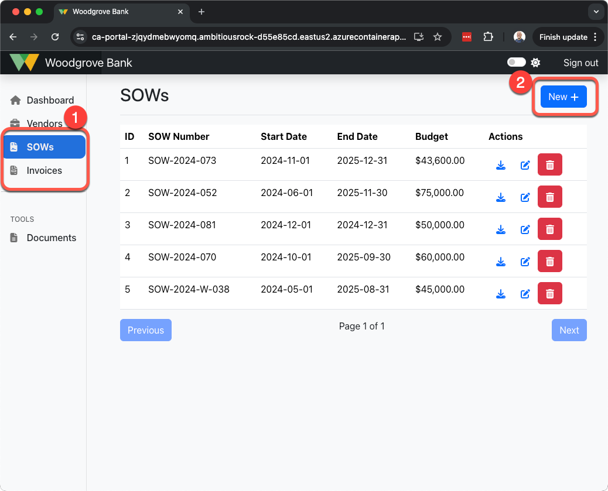
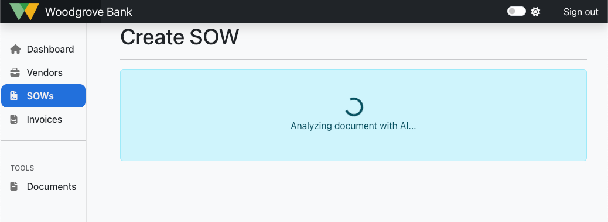
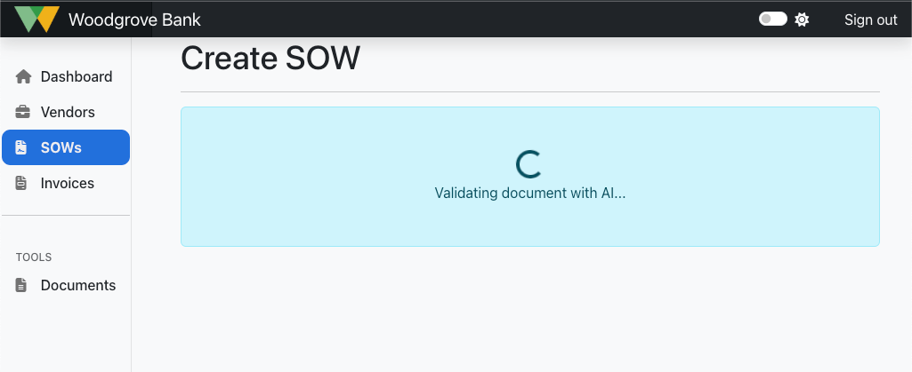

4.4 Validate Data with Azure OpenAI¶
The document ingestion pipeline within the application for SOW and Invoice records is implemented with a multi-stage workflow. The first stage of the workflow is analyzing the document and ingesting it into the system to INSERT/UPDATE SOW and Invoice records based on the document uploaded. The second stage of the workflow is to validate the SOW and/or Invoice record.
The SOW and Invoice validation step of the document ingestion workflow uses Azure OpenAI to perform a chat completion using retrieval augmented generation (RAG) pattern to validate the data from the database and generate an analysis of the validation result.
The code for the validation step of the workflow processes is contained within the REST API /validation/invoice/{id} endpoint for Invoices, and /validation/sow/{id} endpoint for SOWs. The code for these is located within the src/api/app/routers/validation.py file. The below explanation covers the process for validating Invoices, but the same strategy is followed for SOW too.
Benefits of Using Azure OpenAI for Validation¶
The integration of Azure OpenAI into the validation workflow provides several key benefits:
-
Automated Validation: Reduces the need for manual data reviews, saving time and effort.
-
Accuracy and Compliance: Ensures invoices align with contractual agreements in SOWs, reducing payment errors.
-
Fraud Detection: Help identifies potential invoice fraud or inconsistencies before payments are processed.
-
Scalability: Can handle large volumes of invoices efficiently, making it suitable for enterprises with extensive vendor relationships.
-
Audit and Traceability: Stores detailed validation results for future reference, supporting regulatory and compliance requirements.
Invoice Validation Workflow¶
The validation workflow of Invoices and SOWs is implemented using the same retrieval augmented generation (RAG) pattern and system prompt style. Let's walk through the steps involved with the workflow process to validate Invoices:
Step 1: Trigger Invoice Validation¶
The validation process begins when an invoice id is sent in a request to the validation API endpoint:
| Text Only | |
|---|---|
1 | |
The {id} placeholder is where the id of the Invoice will be passed in. The API handler (within the src/api/app/routers/validation.py file) will use this id to retrieve the relevant data from the database.
Step 2: Define System Prompt¶
Before Azure OpenAI can be used to perform the validation, the system prompt must first be defined. This system prompt sill instruct the AI what it's expected to do, what to look for in the data, and how to respond with the validation results.
This application includes code that retrieves the system prompt from a text file:
| src/api/app/routers/validation.py | |
|---|---|
40 41 42 43 | |
For reference, here's the system prompt the application uses for validating Invoices:
| src/api/app/prompts/invoice_validation.txt | |
|---|---|
1 2 3 4 5 6 7 8 9 10 11 12 13 14 15 16 17 18 19 20 21 22 23 | |
The system prompt is also adding additional context of todays date. This is because the LLM doesn't know what the date is, and since Invoices and line items are date sensitive, the LLM needs to know the current date in order to more accurately perform date validations.
At the end of the system prompt is instruction for it to add the values of [PASSED] or [FAILED] at the end of the output to indicate whether it passed or failed validation. This will be used by the code to more easily determine a boolean of true/false to insert into the database later that indicates the pass or fail state.
Step 3: Construct Full Prompt with RAG¶
The next step is to construct the full prompt for LangChain to use, in addition to specify the tools that will be used to implement a retrieval augmented generation (RAG) pattern.
With most of the instructions of how to perform the validation contained within the system prompt, the user prompt only needs to be simple in telling the AI what to do. In this application, the user prompt is just telling the AI to perform an invoice validation along with providing the context of the id of the invoice to validate.
| src/api/app/routers/validation.py | |
|---|---|
72 | |
This user prompt is put together with the system prompt to construct the full prompt that will be sent to the AI.
| src/api/app/routers/validation.py | |
|---|---|
68 69 70 71 72 73 74 75 76 77 78 79 80 81 82 83 84 85 86 87 | |
This defines a LangChain tool for implementing the retrieval augmented generation pattern using the validate_invoice method that will be used to retrieve the relevant data from the database to validate the invoice.
You can expand the section below to see the specific section of code that performs the azure_ai call to generate the document summary, within the database INSERT and UPDATE statements.
Retrieve context data from database
| src/api/app/routers/validation.py | |
|---|---|
112 113 114 115 116 117 118 119 120 121 122 123 124 125 126 127 128 129 130 131 132 133 134 135 136 137 138 139 140 141 142 143 144 145 146 | |
Step 4: Invoke the AI¶
With the prompt built and the RAG tools defined, the AI can now be invoked to perform the validation and generate the response.
| src/api/app/routers/validation.py | |
|---|---|
93 94 95 | |
Step 5: Parse our passed or failed state¶
Now that the generative AI response is returned with the validation results, the [PASSED] or [FAILED] values the system prompt told the AI to add to the end of the response can be parsed out. This will be used to set a true / false in the database to more easily indicate if the validation passed or failed.
| src/api/app/routers/validation.py | |
|---|---|
97 98 99 100 | |
Step 6: Insert Validation Result into database¶
With the validation response generated and a passed or failed result, the validation results can now be inserted into the database, and the response returned from the REST API.
| src/api/app/routers/validation.py | |
|---|---|
102 103 104 105 106 107 108 109 110 | |
This completes the Validation step of the workflow process.
SOW Validation Workflow¶
The validation workflow for SOWs is built using the same retrieval augmented generation (RAG) pattern, with a system prompt that is written specifically for the unique validation requirements of SOWs.
The system prompt for validating SOWs is located within the src/api/app/prompts/sow_validation.txt file. In the next section, we'll review the structure and formatting of the SOW and Invoice validation system prompts.
The user prompt for the SOW validation tells the AI to validate a SOW and gives it the id of the SOW to validate.
| src/api/app/routers/validation.py | |
|---|---|
124 | |
The RAG part of the SOW validation is setup with a LangChain tool using the validate_sow method within the src/api/app/routers/validation.py file.
| src/api/app/routers/validation.py | |
|---|---|
136 137 138 | |
This method is used to retrieve the SOW data (sow, milestones, and deliverables) from the database for the context needed to perform the validation.
| src/api/app/routers/validation.py | |
|---|---|
161 162 163 164 165 166 167 168 169 170 171 172 173 174 175 176 177 178 179 180 | |
Perform Document Validation¶
Accessing the UserPortal application in your deployment of the application for this workshop will allow you to upload documents and perform validations for SOWs and Invoices.
Follow these steps to upload a document and exercise the document ingestion workflow process:
- Open the browser and navigate to the deployed UserPortal application.
- Within the left-side navigation of the application, click on either "SOWs" or "Invoices"" for the document type you want to upload, analyze and validate.
-
On the page that lists the SOWs or Invoices, click the New button in the upper-right.

-
On the New page, select the Vendor and select the document (
.pdffile) to upload, then click Analyze Document. -
The Document workflow will initiate with the Analyze step, and the UI will display a message showing that it's running.

-
Once Analyzing is completed, then Validating will be run, and you will see the UI indicate this.

-
Once the Validating is completed, the application will display the validation results with the pass or fail indicated. These results are the full response from the AI when performing the validation.
-
Dismissing this dialog (clicking Close) will enable you to see the full details of the record.
-
On both the SOW and Invoice edit pages, you can scroll down to the bottom to view the history of validations that have been performed on the record. You will also find a Run Manual Validation button that is setup to enable re-running of just the validation step of the workflow.
-
These steps can be repeated for uploading, analyzing and validating both SOWs and Invoices within the application.